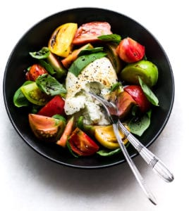

Carefully place the cheese in the center of a bowl or plate. Take care not to tear its delicate skin.
Slice the tomatoes into fat wedges and arrange around the cheese. Add the basil leaves.
Whisk the dressing together and drizzle over the tomatoes. Season with black pepper.
To serve, slice into the burrata to allow the insides to ooze out a little bit.